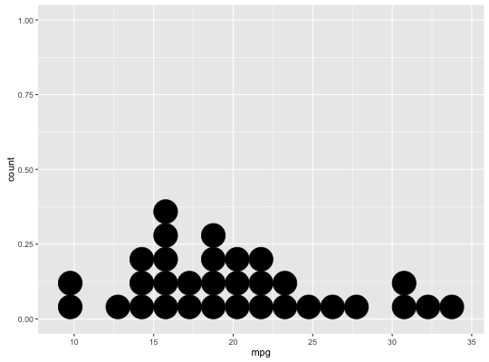
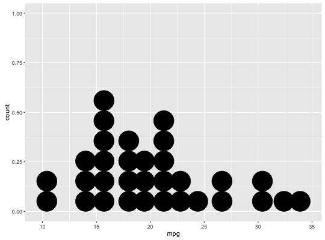
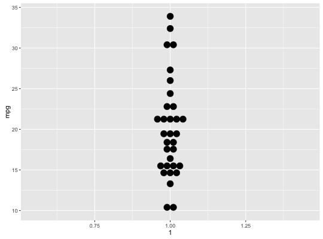

geom_dotplot(mapping = NULL, data = NULL, position = "identity", na.rm = FALSE, binwidth = NULL, binaxis = "x", method = "dotdensity", binpositions = "bygroup", stackdir = "up", stackratio = 1, dotsize = 1, stackgroups = FALSE, origin = NULL, right = TRUE, width = 0.9, drop = FALSE, show.legend = NA, inherit.aes = TRUE, ...)
aes or
aes_. If specified and inherit.aes = TRUE (the
default), is combined with the default mapping at the top level of the
plot. You only need to supply mapping if there isn't a mapping
defined for the plot.FALSE (the default), removes missing values with
a warning. If TRUE silently removes missing values.method is "dotdensity", this specifies maximum bin
width. When method is "histodot", this specifies bin width.
Defaults to 1/30 of the range of the datamethod is "dotdensity", "bygroup" (default)
determines positions of the bins for each group separately. "all" determines
positions of the bins with all the data taken together; this is used for
aligning dot stacks across multiple groups.binwidth, default 1.position = "stack" should have, but can't (because this geom has
some odd properties).method is "histodot", origin of first binmethod is "histodot", should intervals be closed
on the right (a, b], or not [a, b)binaxis is "y", the spacing of the dot stacks
for dodging.NA, the default, includes if any aesthetics are mapped.
FALSE never includes, and TRUE always includes.FALSE, overrides the default aesthetics,
rather than combining with them. This is most useful for helper functions
that define both data and aesthetics and shouldn't inherit behaviour from
the default plot specification, e.g. borders.layer. There are
three types of arguments you can use here:
color = "red" or size = 3.
stat associated with the layer.
In a dot plot, the width of a dot corresponds to the bin width (or maximum width, depending on the binning algorithm), and dots are stacked, with each dot representing one observation.
With dot-density binning, the bin positions are determined by the data and
binwidth, which is the maximum width of each bin. See Wilkinson
(1999) for details on the dot-density binning algorithm.
With histodot binning, the bins have fixed positions and fixed widths, much like a histogram.
When binning along the x axis and stacking along the y axis, the numbers on y axis are not meaningful, due to technical limitations of ggplot2. You can hide the y axis, as in one of the examples, or manually scale it to match the number of dots.
geom_dotplot understands the following aesthetics (required aesthetics are in bold):
x
y
alpha
colour
fill
Wilkinson, L. (1999) Dot plots. The American Statistician, 53(3), 276-281.
ggplot(mtcars, aes(x = mpg)) + geom_dotplot()`stat_bindot()` using `bins = 30`. Pick better value with `binwidth`.ggplot(mtcars, aes(x = mpg)) + geom_dotplot(binwidth = 1.5)# Use fixed-width bins ggplot(mtcars, aes(x = mpg)) + geom_dotplot(method="histodot", binwidth = 1.5)
# Some other stacking methods ggplot(mtcars, aes(x = mpg)) + geom_dotplot(binwidth = 1.5, stackdir = "center")ggplot(mtcars, aes(x = mpg)) + geom_dotplot(binwidth = 1.5, stackdir = "centerwhole")# y axis isn't really meaningful, so hide it ggplot(mtcars, aes(x = mpg)) + geom_dotplot(binwidth = 1.5) + scale_y_continuous(NULL, breaks = NULL)# Overlap dots vertically ggplot(mtcars, aes(x = mpg)) + geom_dotplot(binwidth = 1.5, stackratio = .7)# Expand dot diameter ggplot(mtcars, aes(x = mpg)) + geom_dotplot(binwidth = 1.5, dotsize = 1.25)
# Examples with stacking along y axis instead of x ggplot(mtcars, aes(x = 1, y = mpg)) + geom_dotplot(binaxis = "y", stackdir = "center")`stat_bindot()` using `bins = 30`. Pick better value with `binwidth`.
ggplot(mtcars, aes(x = factor(cyl), y = mpg)) + geom_dotplot(binaxis = "y", stackdir = "center")`stat_bindot()` using `bins = 30`. Pick better value with `binwidth`.ggplot(mtcars, aes(x = factor(cyl), y = mpg)) + geom_dotplot(binaxis = "y", stackdir = "centerwhole")`stat_bindot()` using `bins = 30`. Pick better value with `binwidth`.ggplot(mtcars, aes(x = factor(vs), fill = factor(cyl), y = mpg)) + geom_dotplot(binaxis = "y", stackdir = "center", position = "dodge")`stat_bindot()` using `bins = 30`. Pick better value with `binwidth`.# binpositions="all" ensures that the bins are aligned between groups ggplot(mtcars, aes(x = factor(am), y = mpg)) + geom_dotplot(binaxis = "y", stackdir = "center", binpositions="all")`stat_bindot()` using `bins = 30`. Pick better value with `binwidth`.# Stacking multiple groups, with different fill ggplot(mtcars, aes(x = mpg, fill = factor(cyl))) + geom_dotplot(stackgroups = TRUE, binwidth = 1, binpositions = "all")ggplot(mtcars, aes(x = mpg, fill = factor(cyl))) + geom_dotplot(stackgroups = TRUE, binwidth = 1, method = "histodot")ggplot(mtcars, aes(x = 1, y = mpg, fill = factor(cyl))) + geom_dotplot(binaxis = "y", stackgroups = TRUE, binwidth = 1, method = "histodot")